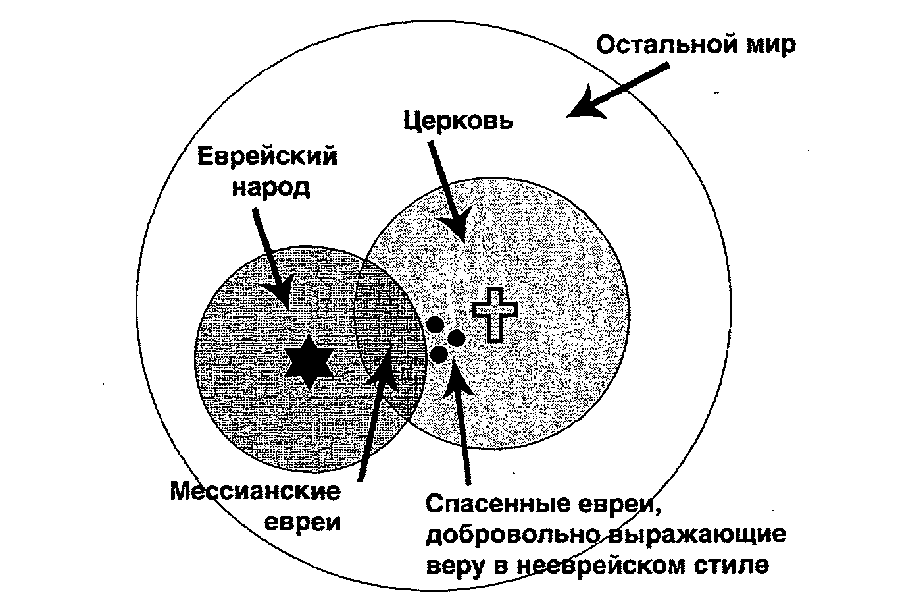
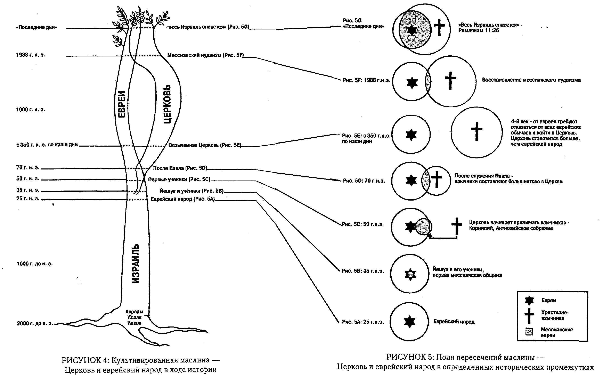

F A .kz
F A .kz


Мессианский еврейский манифест, автор Давид Стерн
ГЛАВА 3
ИСТОРИЯ
А. История — ключ ко всему
1. Что находится в фокусе нашего внимания
Сегодня люди не смотрят на действительность сквозь призму истории. Они могут знать исторические факты и теории, но для большинства людей история
представляет собой нечто сухое, покрытое пылью, не связанное с жизненными радостями и печалями. Однако именно история находится в фокусе бытия.
История является ключом к цели и смыслу жизни, к счастью.
Подобное утверждение, если его вообще понимают в наши дни, вызывает удивление. Это полная противоположность позиции, лаконично изложенной Генри
Фордом: «История — это бегство». Конечно, изобретатель имел в виду, что, освобождая себя от устаревших путей, мы должны позволить своему мышлению
свободно парить над всем ограниченным и традиционным. Но поскольку современное поколение понимает свободу не как «свободу для», «но свободу от»,
история рассматривается как оковы, а не структура, в рамках которой следует действовать. Люди не хотят свободы для изменения истории, они стремятся
к свободе от истории. Однако мудрый человек послушает Джорджа Сантаяну: «Кто не прислушивается к истории, обречён на ее повторение».
Почему же люди испытывают такое отвращение к истории? Нет, это неверный вопрос. Правильнее будет спросить так: почему люди относятся к истории так
несознательно? Этому есть несколько причин. Это поколение не чувствует своих корней.
Будучи ребенком во время Второй Мировой войны, я был научен патриотизму, который был основан на американской истории; но даже тогда немногие из нас
серьёзно относились к тому, чему были научены. Непостоянство, средства массовой информации и материализм внесли свой вклад в отчуждение. Бунт
против власти и авторитетов в 60-е годы, за которым последовал период самосозерцания в 70-х, сфокусировал внимание на настоящем, в ущерб прошлому и
будущему.
Лжерелигии также произвели свой огромный вклад, ибо большинство из них вообще не имеет никакого чувства истории. Восточные религии основывают свою
теорию реинкарнации на том, что я называю исторической теорией «йо-йо» «индивидуальная душа, свободная в небесной сфере, за исключением своей связи
с Богом, спускается в тело здесь, в этом мире иллюзий, проживает жизнь, затем оставляет своё тело и возвращается обратно на небо, только для того,
чтобы потом опять спуститься в новом теле, жить, умереть, возвратиться на небо, спуститься, подняться, вверх, вниз, вверх, вниз пока не остановится
это повторяющееся колесо жизни. В этой схеме социальное существование становится иллюзорным, не имеет никакого смысла, и история также абсолютно
ничего не значит.
В какой-то недолгий период, до того, как я осознал важность истории, лжерелигия была привлекательна для меня. В тот момент я не мог объяснить,
почему это происходит, но сейчас я понимаю, что это было связано с тем, что та религия имела особую концепцию истории. Концепция была полностью
неверна, но, по крайней мере, она гласила, что всеобщее существование пронизано целью присоединения начала к концу через середину.
Коммунизм привлекает, так как корни его — в истории (на самом деле это ложное мессианство, библейская ересь). Но только Библия и истинная религия
отводят истории истинную роль.
В наше время американцы ещё менее ориентированы на историю, чем когда-либо.
Когда-то у нас были лозунги, которые могли побудить нацию к действиям. «Проясним судьбу!», «Подготовим мир к демократии!». Их больше нет.
Сегодня с трудом можно найти американцев, которые считают, что у нашей страны есть особая миссия мирового масштаба, основанная на прошлой истории,
которой следует гордиться, и на будущем, которое следует усовершенствовать. Наоборот, многие чувствуют стыд при мысли о прошлом и смотрят в будущее
без надежды, но немногие понимают, что такие чувства исходят от бесцельности. Возможно, конец Холодной войны, преобразование мировых союзов и
растущая опасность, исходящая от Ближнего востока, изменят подобную отчужденность по отношению к истории.
По нескольким причинам израильтяне обеспокоены историей гораздо больше. Иудаизм, религия, основанная на истории, освящающая время в своих
праздниках, затрагивает каждого. В фокусе светского сионизма, еще одной группы с мессианской идеей, также находится история. Израильский народ
обладает более сильным духом коллективизма и меньшим индивидуализмом (в плохом смысле этого слова), чем американцы — хотя и это, к несчастью,
меняется. И, кроме того, само существование Израиля свидетельствует о наличии сверхъестественной силы, творящей историю (с чем соглашаются даже
некоторые атеисты), и это ощущение чудесного постоянно отражается в общественной жизни.
2. Три основных вопроса
Почему же я говорю, что история является ключом ко всему? Потому что верю, что существуют три основных вопроса в жизни, которые каждый задаёт по-
своему, некоторые сознательно, другие — в полном непонимании.
Вот эти вопросы:
Как достичь счастья? Что должен делать человек? Что это всё значит?
Первый из них является центральным вопросом психологии. Второй (если выйти за рамки профориентации) — это основной вопрос этики. А третий? Третий,
можете подумать вы, относится к области философии, но это не так. Это центральный вопрос истории. Обсуждение философского вопроса может
продолжаться бесконечно и никогда не прекратиться, так как вопрос остаётся абстрактным, не имеющим отношения к событиям. Но история является
историей, только если она основана на событиях; и действительно, в двух словах историю можно определить как «истолкованные события». Поэтому именно
в событиях, в истории следует искать ответы на вопрос о смысле жизни.
3. Смысл жизни
Вопрос о смысле жизни — решающий, он определяет ответы на остальные вопросы. Если вы знаете, в чем смысл жизни, вы сможете определить, что делать и
как стать счастливым. Погоня за счастьем завершится неудачей, если это будет конечной целью, так она не приведёт к обнаружению смысла жизни. Такова
ошибка 60-х и 70-х, а возможно, кардинальная ошибка Америки.
Сосредоточенность на том, что следует делать в жизни, не приведёт к результатам, так как это анализ средств без осознания цели. Рано или поздно
человек увидит этот пробел, и вся структура его поступков рухнет.
В какой-то мере Сартр и другие атеисты-экзистенциалисты, отрицавшие существование цели, «встроенной» во вселенную, и настаивавшие на том, что
каждый из нас должен создать свой собственный смысл жизни, оказали нам услугу. Следуя логике своих предположений и утверждая, что Бога Библии не
существует, они указывали на безнадежность и бессмысленность жизни в такой вселенной.
Как ясно отметил Камю в первых предложениях своей книги «Миф о Сизифе»:
"Есть лишь один поистине серьёзный философский вопрос — вопрос о самоубийстве. Решить, стоит ли жизнь труда быть прожитой, или она того не стоит, —
это значит ответить на основополагающий вопрос философии".
Или, сказал бы я, на основной вопрос истории. Другими словами, вопрос о том, ведёт ли нас история к чему-либо достойному того, чтобы мы шли туда,
является единственным решающим вопросом, всё остальное — бегство.
Смысл жизни? Пылает ли этот вопрос или едва теплится в умах, как же всё-таки люди отвечают на него?
В некоторых из тех, кто отвергает Бога, «попадает пуля Сартра», и они пытаются взвалить на свои плечи полное бремя создания собственного смысла в
бессмысленной вселенной. Но я просто не представляю, как они смогут выполнить столь бессмысленную, неблагодарную, бесцельную и всё же выдающуюся
задачу. Если Сартр прав, разве не вынуждены мы ответить на вопрос Камю однозначно отрицательно? Многие уклоняются от ответа, прикрываясь
честолюбием, усердием, добрыми делами, благими намерениями, самоудовлетворением, стремлением стать культурными — так долго, насколько позволяет им
«Небесная гончая» (по мотивам поэмы Френсиса Томпсона о Йешуа, ходящем за нами во все наши ложные убежища, пока мы не примем его.)
Ибо только Библия придаёт истинный смысл жизни и истории «В начале Бог сотворил ... » человека с определённой целью, а именно для того, чтобы
прославить Бога, Бог допустил существование зла, позже Он избрал одного человека, Авраама, для искупления народа, Израиля, и через этот народ,
Израиль, Он привёл Мессию, Йешуа, который должен искупить всё человечество, чтобы оно вновь смогло прославлять Бога.
Для Бога целью истории является наступление полноты Божьего Царства, которое уже начало влиять на человечество через Мессию Йешуа и его Тело. Этот
странствующий в настоящем народ не осознаёт в полной мере того, что произойдёт в будущем. Но придёт время, когда весь Израиль будет спасён, а
Мессия Йешуа начнёт свое правление во славе. Таким образом, то, что было «в начале», связано через середину, в которой мы живём сейчас, с истинным
и славным будущим.
4. Трудиться с Богом ради исполнения Его воли
Как только мы начинаем осознавать, что Бог определил для истории некую цель, мы понимаем, что следует делать. Мы знаем, что нужно трудиться для
исполнения Богом данной цели и быть, ни много ни мало, Божьими соратниками — не в каком-то утрированном, претенциозном смысле, но со смирением.
Как только мы принимаем тот факт, что Бог дал нам вдохновленную Им Книгу, в которой явлен Его замысел, нашей целью становится исключительно
исполнение Его замысла, Его воли. И тогда проблема переходит в другую область: как же узнать Божью волю? Здесь достаточно отметить, что в целом
Божья воля проявляется в Его Слове. Потому, если какой-либо другой метод распознавания Божьей воли — будь то внутреннее водительство, сон, слово
друга или желание сердца — противоречит Библии, это значит, что он неверен. «Ибо Я — Адонай, Я не изменяюсь».
5. Апатия и усердие
Поговорим теперь об апатии, энтузиазме, усердии и мотивации. Без знания Божьей цели для истории апатия является нормальным человеческим состоянием,
так как это естественная реакция в том случае, когда на вопросы «Есть ли смысл в жизни?», «Имеет ли что-либо значение?» человек сам себе отвечает
«Нет».
Но когда мы видим, что Бог отвечает «Да», естественной реакцией становится энтузиазм. Это слово происходит от греческого эн (в) и теос (Бог): быть
«в Боге», иметь «Бога в» себе. Если Бог отвечает, что кое-что всё же имеет значение, и если вы в Боге, а Бог в вас, как говорит об этом Его Слово,
то вы почувствуете прилив энтузиазма.
Более того, «Бог в вас» наполнит вас усердием в исполнении Его воли. Писание предостерегает, что это усердие может быть опасно, подобно динамиту.
Шауль [Павел] свидетельствует, что когда у Израиля была «ревность по отношению к Богу», то она была основана «на неверном понимании». Он также
писал «Быть ревностным хорошо, но только тогда, когда и мотивы хорошие».
Я также считаю, что наиболее сильная мотивация рождается из конфликтных ситуации, и чем более важен, судьбоносен конфликт, тем сильнее мотивация
для разрешения этой ситуации (и тем больше радость от её разрешения) Чем больше разница между зарядами клемм электрической батареи, тем сильнее
напряжение. Подобно этому, конфликт между еврейским народом и Церковью сильно подзаряжается любовью и ненавистью, позитивным и негативным.
В этом конфликте расходовалась огромная энергия, и ее важность для истории невозможно переоценить Поэтому любой человек, так или иначе вовлечённый
в это, должен иметь сильнейшую мотивацию, направленную на разрешение проблемы, и её разрешение (когда «войдёт полное число язычников» и весь
Израиль спасётся) принесёт с собой радость, подобной которой не было за всю историю. Послание к Римлянам 11:15 называет это «жизнью из
мёртвых»
6. Мессианский иудаизм в центре истории
В силу своей принадлежности к еврейской общине с одной стороны и к Церкви с другой, мессианские евреи имеют двойное предназначение, находясь в
центре величайшего напряжения и располагая величайшим энергетическим потенциалом. Таким образом, они обладают наиболее сильным мотивом участвовать
в разрешении величайшего исторического конфликта. Именно в этом и состоит призвание мессианской еврейской общины. Она сотрудничает с Богом для
достижения Его уже провозглашённой цели. Мессианский иудаизм, несомненно, находится в фокусе истории.
7. Мессианские евреи! Ваша история определяет ваше призвание
Я написал предыдущие слова, так как желаю, чтобы мои мессианские читатели почувствовали личную причастность к историческому анализу, приводимому
далее.
Я не хочу, чтобы вы просто абстрактно думали о «социальных силах, формирующих историю», как в школьном тесте. Пасхальная Агада даёт вам возможность
пережить и прочувствовать Исход как свою собственную историю — вы лично оставили служение фараону в Египте и перешли море посуху вместе с Моисеем,
на пути к свободе.
Подобно этому, я желаю, чтобы вы пережили то, что произошло между Израилем и Церковью, как свою собственную историю — свою трагедию, свою надежду и
своё поле действий. Ваша история: еврейская, мессианская и мессианская еврейская, определяет ваше призвание и должна воодушевлять вас! Как я уже
сказал, быть мессианским евреем — это самый волнующий и захватывающий путь, какой может избрать еврей.
Б. Израиль, Церковь и мессианские евреи
1. Общепринятое представление
Согласно общепринятому мнению, Израиль и Церковь — два отдельных сообщества. «Типичный еврей» может объяснить это следующим образом:
"Да, Йешуа и его первые ученики были евреями, но вскоре движение, основанное им, отошло от иудаизма. В него влились многие язычники, которые
добавили свои собственные языческие идеи и привели христианство к тому, чем оно является сегодня — хорошим для язычников, но весьма далеким от
иудаизма. Более того, все те страдания, которые причинили еврейскому народу во имя Йешуа, удаляют без остатка всякий интерес к христианству,
который мог бы у меня возникнуть. Пусть христиане поклоняются Богу так, как хотят они, я же останусь евреем".
При этом «типичный еврей» может быть ортодоксом, консерватором, реформистом, атеистом или просто равнодушным.
Общепринятое представление о еврейском народе и Церкви: одни евреи не верят в Йешуа и остаются евреями, а другие стали христианами и ушли в
церковь. Мессианскому иудаизму здесь места не нашлось
Подобно этому, «типичный христианин» может сказать
«Да, Йешуа был евреем, но евреи отвергли его. У них своя религия, у меня — своя. Пусть они поклоняются Богу, как хотят, я же останусь
христианином»
Говорящий так может быть протестантом, католиком, православным, истинным верующим или только называющим себя христианином.
По обеим сторонам картина представляется так, как на рисунке, где маленький круг символизирует еврейскую общину (он меньше в связи с тем, что и
еврейская община меньше), в то время как круг побольше — по Церковь. Круги не пересекаются. Чтобы «обратиться в христианство», еврей оставляет свой
народ (свой кружок) и присоединяется к Церкви. Всё очень просто и понятно.
Однако истина необязательно выглядит именно так.
2. Упражнение в логике, всё человечество делится на…
Всё человечество делится на две группы: те, кто говорят, что всё человечество можно разделить на две группы, и те, кто считают, что этого сделать
нельзя. Я принадлежу к первой группе, отсюда и буду исходить.
Для того чтобы объяснить отношения между евреями и христианами лучше, чем это делается традиционно, нам нужно рассмотреть два способа разделения
человечества на две группы.
Всё человечество делится на евреев и язычников (неевреев). Ранее мы обсуждали проблему определения еврея — по матери, по отцу, по обоим и т.д.
Неважно, как определяется термин — логика подводит нас к тому, что каждый человек на земле является либо евреем, либо язычником. Он не может быть и
тем и другим. Или не быть ни тем, ни другим.
Подобно этому, всё человечество разделено на мессианских и немессианских представителей (мы избегаем общепринятых терминов «христиане» и «не
христиане» по обсуждавшимся ранее причинам). И снова возникает проблема: как можно определить мессианского представителя человечества - по вере, по
принадлежности к определенной общине или культуре или по какому-либо другому признаку? И вновь логика подсказывает, что любой человек должен быть
либо мессианским, либо не мессианским. Невозможно быть ни тем ни другим, или же и тем и другим одновременно.
Я знаю человека, который говорит «Я не могу сказать, что я верю в Евангелие или что я в него не верю», и называет себя «другом верующих». Писание
не даёт никаких оснований для такой неотчётливой позиции. Йешуа сказал «Кто не со мной, тот против меня, и кто не собирает со мной, тот расточает»
(Матитьягу 12:30, Захария 1:15 и Матитьягу 25:31-46 также исключают подобную неопределённость).
Путаница в рассуждениях о евреях и христианах происходит из-за непонимания того, что еврей/язычник и мессианский/немессианский представитель
человечества - это два отдельных и логически несвязанных способа описания человеческой расы, два различных измерения.
Путаница исчезает, как только мы начинаем осознавать, что в понятие «евреи» входят только евреи: мессианские евреи и немессианские евреи. В то
время как Церковь включает всех: и мессианские евреи и мессианские неевреи. Потому (это очевидно, а, возможно, и логично) человек может быть
одновременно и евреем, и мессианским верующим.
Следовательно, можно получить рисунок, где самый большой круг символизирует всё человечество, а еврейский кружок и кружок христиан пересекаются.
Это пересечение евреев и церкви и есть мессианские евреи. Оставшаяся часть еврейского круга — немессианские евреи, а оставшаяся часть церковного
крута — нееврейские верующие. Четвертая категория, все остальные люди, которые не являются ни евреями, ни христианами, представлена сегментом
самого большого круга, включающего в себя два меньших круга.

3. Эмпирический вопрос: существуют ли мессианские евреи?
Итак, мы рассуждали об абстрактных логических категориях, и наши аргументы опровергли заявление о том, что термин «мессианский еврей» невозможен с
точки зрения логики, будучи противоречивым. Нам осталось ответить на один единственный эмпирический вопрос: а существуют ли мессианские евреи
вообще?
Есть ли реальные люди, относящиеся к этой категории? Или же это просто «пустая ниша»? Существуют ли в мире люди, одновременно являющиеся «евреями»
и «мессианскими верующими»? Я скажу да. На самом деле, я один из них.
Теперь нужно объяснить, почему такая группа существует и почему ее следует называть именно так.
Мы начнем с рассмотрения трёх сообществ: Израиль, еврейский народ и Церковь, — и зададим вопрос каковы отношения между ними (с теологической и
исторической точек зрения). Теология откроет нам вечные истины «в небесных сферах», в то время как история осветит то, что происходит в рамках
времени здесь, на земле. И тогда мы лучше сможем понять, что нам следует делать.
Христианские теологи в дискуссии по данной теме обычно следуют одному из двух подходов. Более старый и более известный из них именуется «теологией
замещения» или «теологией Завета». В последнее время этот подход получил новое развитие — в концепции «царства в наши дни», «владычества»,
«реконструкции» (в Англии — «реставрации»). Как бы он ни назывался, смысл этого подхода в том, что Церковь является «новым» или «духовным»
Израилем, заменившим собой «прежний» Израиль (евреев) в качестве Божьего народа.
В девятнадцатом веке в протестантской среде возникла теология диспенсационализма, которая, в самой крайней своей форме гласит, что еврейский народ
имеет обещания только на земле, а Церковь — на небесах. Мы не будем подробно рассматривать эти подходы, но, по сути, все они упрощают
действительность и приводят к явным антисемитским выводам.
В этой книге слово «антисемитский» является синонимом понятия «антиеврейский». Такое использование может подвергаться критике по двум
причинам:
Во-первых, некоторые арабы могут обидеться, так как тоже являются семитами, но англоязычные люди говоря «антисемитский», не подразумевают
«антиарабскии».
Во-вторых, я слышал возражение некоторых христиан говорящих, что слово «антисемитизм» сразу вызывает в памяти ужасы гитлеровской Германии Хотя я
не желаю будоражить эти воспоминания каждый раз, когда появляется этот термин следует признать что антисемитизм представляет собой спектр зла, а не
добра, начиная со сравнительно незначительных грехов и заканчивая самыми ужасными преступлениями, какие только можно вообразить.
4. Теология «маслины»
Нижеследующее рассуждение покажет, что разделение между Церковью и еврейским народом, которое усиливалось на протяжении последних 2000 лет,
полностью расходится с Божьей волей, являясь ужасной ошибкой, которую я ранее назвал величайшим расколом в истории. Вскоре мы увидим, что нашей
задачей является исправление этой ошибки, то, что иудаизм называет тикун-гаолам, буквально «приведение мира в порядок».
Согласно еврейской традиции, такая деятельность ускоряет приход Мессии, и это соотносится с тем, к чему Кефа [Петр] призывает верующих в Йешуа,
говоря о необходимости ускорить приход Дня Господа. Я называю этот подход «теологией маслины», пользуясь аллегорией Шауля [Павла] в Послании к
Римлянам 11:16-26, адресованном христианам-неевреям (перевод мой, из Еврейского Нового Завета):
"Далее, если хала, приносимая в качестве первого плода, свята, то [свята] и вся булка.
И если корень свят, то и ветви [святы]. Но если некоторые из ветвей отломились, а ты — дикая маслина — был привит посреди них и стал наравне с ними
пользоваться богатством корня маслины, то не хвались, словно ты лучше [остальных] ветвей.
Однако, если хвалишься, помни, что не ты поддерживаешь корень, а корень поддерживает тебя.
Тогда ты скажешь «Ветви отломились, чтобы я привился». Правильно, но что дальше? Они отломились из-за недостатка доверия [Богу] . Но ведь ты
держишься только благодаря своему доверию [Богу]. Потому не будь заносчив, наоборот, бойся! Ведь если Бог не пожалел природные ветви, то, конечно
же, не пожалеет и тебя!
Потому приглядись повнимательней к Божьей доброте и строгости с одной стороны, строгости по отношению к отломившимся, но, с другой стороны,
Божьей доброте по отношению к тебе — если только сам ты хранишь себя в этой доброте.
Иначе и ты будешь отсечен! Более того, оставшиеся [ветви], если не станут упорствовать в недостатке доверия [Богу], будут привиты обратно,
поскольку Бог в силах привить их.
Ибо если ты был отрезан от дикой по природе маслины и привит, вопреки природе, к культивированной маслине, насколько же проще эти природные ветви
привьются обратно к своей собственной маслине!
Я же, братья, хочу, чтобы вы осознали эту истину, которую Бог прежде хранил в тайне, но теперь открыл, чтобы вы не думали, что знаете больше того,
что есть на самом деле. [Истину] о том, что жестокосердие, в какой-то мере, нашло на Израиль до тех пор, пока не войдёт полное число гоим; и что
именно таким образом весь Израиль спасётся".
Ниже рисунок изображает «культивированную маслину», развивающуюся в процессе истории; хронология, представленная слева, насчитывает четыре тысячи
лет. Поперечные сечения маслины символизируют отношения между еврейским народом и Церковью в различные периоды времени.

(нажми на картинку, если хочешь увеличить её или сохранить)
Маслина, которую культивирует Бог, — Израиль. Её корни — патриархи Авраам, Исаак и Иаков. Из этого корня вырос еврейский народ. Язычники же были
дикой маслиной, которой Бог-садовник не уделял такого же внимания. Шауль пишет, что они «были в то время без Христа, отчуждены от общества
Израильского, чужды заветов обетования, не имели надежды и были безбожники в мире»
Самый нижний рисунок 5А иллюстрирует эту ситуацию, которая преобладала до времени служения Йешуа (25 г. н. э.).
Немессианские евреи находились в оппозиции к мессианским, вытесняя их из центра (Деяния 4-9, 12). Между тем послание распространялось среди
язычников — Корнилий (Деяния 10), Антиохия (Деяния 11); см. рисунок 5С (50 г. н. э.).
Хотя число мессианских евреев только в одном Иерусалиме составляло «многие десятки тысяч», и все они были «ревнители Торы», путешествия Шауля
(Деяния 13-28) и других миссионеров вскоре сделали язычников большинством в Церкви. Тем не менее, еврейский народ всё ещё считал еврейских верующих
частью еврейского сообщества (Рисунок 5Б, 70 г. н. э.).
Однако ко времени написания Павлом Послания к Римлянам (ок. 57 г. н. э.), стало ясно, что большинство евреев отвергает Мессию Йешуа. Шауль называл
их отломившимися ветвями культурной маслины. Однако он предостерегал верующих неевреев не годиться чрезмерно тем, что они были привиты к маслине, и
не считать себя лучше отпавших ветвей, так как они занимают это место только благодаря своей вере, и без неё сами будут отсечены.
И наоборот, отпавшие ветви (немессианские евреи) могут снова быть привиты верой. Даже с сельскохозяйственной точки зрения, природные ветви намного
лучше привьются к дереву, чем дикие, и садовник ожидает, что культурные ветви принесут лучший плод, чем дикие (однако Бог не ограничен
человеческими представлениями). Для Шауля важно то, что эти природные ветви будут действительно привиты обратно, когда «языческий мир достигнет
полноты».
Со временем ситуация с еврейскими верующими претерпела заметные изменения. Когда начали сгущаться тучи перед началом первого еврейского восстания
против Рима, мессианские евреи вспомнили пророчество Йешуа:
"Однако, когда вы увидите, что Йерушалаим окружён войсками, знайте, что его вскоре разрушат. Жители Йегуды пусть бегут в горы; те, кто будут в
городе, пусть покинут его, а находящиеся за его пределами не должны входить в него".
Они бежали в город Пелла, избежав разрушения Храма (70 г. н. э.) и римской бойни, в результате которой погиб почти миллион евреев (согласно Иосифу
Флавию; по другим оценкам убитых было меньше). За подобную дальновидность зелоты, возглавившие бунт, заклеймили мессианских евреев как
предателей.
Во время второго восстания (132-135 гг. н. э.) еврейские верующие поначалу согласились примкнуть к повстанцам. Однако когда раби Акива изменил имя
вождя евреев с Шимона Бар-Косибы на Шимона Бар-Кохву, провозгласив его давно обещанной «звездой [арамейское кохва] от Иакова из Книги Чисел 24:17,
то есть Мессией, они уже более не могли продолжать сотрудничество, так как это противоречило их верности истинному Мессии, Йешуа. Их вновь сочли
изменниками, и всё остальное еврейское общество было весьма разочаровано в них.
Помимо политических разногласии были и другие факторы, осложнявшие ситуацию. Приблизительно в 90 г н. э. к синагогальному служению было добавлено
Биркат га-Миним (благословение против «сектантов», под которыми подразумевались еврейские верующие). Несомненно, мессианские евреи постепенно
вытеснялись из еврейской общины теми её членами, которые не верили в Йешуа.
Кроме того, христиане-неевреи ставили под сомнение ортодоксальность веры еврейских верующих, которые соблюдали еврейские традиции и сохраняли
верность своему еврейству. В «Диалоге с Трифоном, иудеем», написанном Иустином Мучеником, можно увидеть умеренную терпимость по отношению к
мессианским евреям, сохраняющим свои еврейские особенности.
Однако после того, как христианство стало государственной религией Рима в начале четвертого века, в институт Церкви вошло множество не спасенных
язычников. Церковь численно стала намного превосходить еврейское население всего мира, а языческие представления стали доминировать в ней. Церковь
стала считать еврейский народ побежденным соперником и с непониманием относилась к еврейским верующим, желавшим сохранить своё еврейство. Стало
практически невозможным выражать публично свою верность и еврейству, и мессианской вере. Еврей, желавший принять еврейского Мессию, должен был
оставить свои народ и примкнуть к Церкви (Рисунок 5Е, 350 г. н. э. )
Иустин Мученик, «Диалог с Трифоном, иудеем» . Следующий отрывок иллюстрирует эту «умеренную терпимость»:
"Если кто по слабости духа захочет соблюдать и некоторые, какие можно ныне, из постановлений Моисея данных по нашему мнению ради жестокосердия
вашего, и при этом будет уповать на Христа и исполнять вечные и естественные правила справедливости и святости, жить с христианами и верующими, но
как я уже сказал не будет склонять их обрезываться, как он сам, соблюдать субботы и другое подобное то, я думаю, таких должно принимать и иметь
общение во всём с ними как с родственниками и братьями"
Далее он добавляет, что не одобряет иудействующих, но считает, что верующий язычник, попавший под влияние иудействующих, всё равно будет спасён.
Однако, никаким образом, по его мнению, не спасутся те, которые, уверовавши и признавши Его Христом, по какой-нибудь причине обратились к
иудейскому закону, отвергли Христа и не покаялись прежде смерти.
От евреев, уверовавших в Йешуа, требовалось полное отделение от иудаизма, еврейского народа и еврейских традиций.
Вот пример отречения, которое должны были произносить мессианские евреи:
«Я отказываюсь от всех иудейских традиций, ритуалов, законов, от опресноков и жертв агнцев на Пасху, а также от всех других иудейских праздников,
жертв, молитв, окроплений, очищений, освящений и жертв умилостивления, постов, новолуний, суббот и предрассудков, гимнов и напевов, обрядов и
синагог, пищи и напитков евреев; одним словом, я отвергаю абсолютно всё еврейское, всякий закон, обряд и традицию... и если впоследствии я пожелаю
отказаться от своих слов и возвратиться к еврейским предрассудкам, и если обнаружат, что я ем или праздную с евреями, или тайно общаюсь с ними,
осуждая христианскую религию вместо того, чтобы открыто обличить их и осудить их пустую веру, то пусть страх Каина и проказа Геезии постигнут меня,
а также законное наказание от рук тех, перед кем я признаю себя виновным. И да буду я предан анафеме в мире грядущем, и пусть моя душа пристанет к
сатане и бесам».
Хотя современному читателю это исповедание может показаться довольно грубым, оно точно отражает представления, преобладавшие в Церкви на протяжении
сотен лет и принявшие форму фанатизма в четвертом и пятом веках. Испанская инквизиция тщательно следила за католиками еврейского происхождения,
чтобы убедиться, действительно ли они оставили еврейские традиции. Отвращение язычников ко всему еврейскому вылилось впоследствии в преследование
евреев со стороны христиан: крестовые походы, инквизиция, погромы, нацистская Германия (да, и здесь было участие христиан, как в добром, так и в
злом), вся та боль и ужасы, которые евреи не могут забыть. Церкви также не будет позволено забыть все это, пока все христиане (а не только
некоторые из них) не извлекут из этого урок.
Итак, вплоть до недавнего времени еврейский народ и Церковь существовали как два раздельных сообщества. Мессианскому иудаизму не находилось места,
так как большинство евреев (неспасённые люди, опыт общения которых с Церковью в большинстве случаев был негативным) и большинство христиан
(язычники, неверно понимавшие связь своей веры с еврейским народом) желали, чтобы дело обстояло именно так.
Оставив ненадолго историю трагического разделения культивированной маслины на два отдельных Божьих народа, давайте подробнее рассмотрим образ
маслины, чтобы уяснить, какое значение он имеет для теологии. Существует только одно культурное дерево, и это означает, что есть только один
Израиль, а не два. Дикие ветви (язычники) были привиты верой в Мессию, «стали близки Кровию Христовою» (Ефесянам 2:13, Синод. пер.), и теперь
включены в сообщество Израиля. Но они не являются новым Израилем, как учит теология замещения.
Также еврейские и нееврейские верующие не составляют вместе новый Израиль, так как отпавшие ветви всё ещё являются Израилем, хотя живительный сок
дерева не питает их сейчас. Бог хранит их чудесным образом, и поэтому вместо того, чтобы высохнуть, как это обычно случается с отпавшими ветвями,
они способны вновь привиться верой. Таким образом, неспасённые евреи (отпавшие природные ветви), спасённые евреи (природные ветви, привитые к
дереву) и верующие язычники (привитые дикие ветви) — все они являются частью одного Израиля; и этот факт должна принимать во внимание любая теория
об Израиле и Церкви, если она претендует на истинность.
В отрывке о «маслине» и в любом другом месте Писания не сказано ни слова о разделении обещаний на земные (для евреев) и небесные (для Церкви).
Однако Бог дал два вида обещаний. Что касается обещаний, относящихся к индивидуальному спасению, то нет ни еврея, ни язычника (Галатам 3:28), нет
никакого различия между ними (Римлянам 10:12) или «стоящей посреди преграды» (Ефесянам 2:14-19). С другой стороны, остаются в силе все обещания,
данные Израилю как нации, всему еврейскому народу. К этим обещаниям языческие народы в целом и верующие язычники в частности не имеют прямого
отношения. При этом существуют также обещания некоторым языческим народам (так, например, Книга Исайи 19:24-25 обещает, что Бог благословит Египет
и Ассирию наряду с Израилем; и язычники, являющиеся частью этих народов, почувствуют эти благословения на себе).
В наше время ситуация с содружеством Израиля такова: язычники из многих народов признают еврейского Мессию, чего нельзя сказать о нации Израиля.
Предположим, что граждане Канады, Индии, Нигерии, Австралии и другие члены Британского Содружества наций признали Елизавету II своей королевой, но
большинство отдельных англичан, а также британское правительство, не сделали этого. В такой ситуации было бы неверно говорить, что Великобритания
более не является членом Содружества — ведь в действительности она всё ещё остаётся главным его членом между равными. Также было бы ошибкой
согласиться с Британией в том, что Елизавета не является королевой. Правильнее было бы попытаться убедить их — как отдельных англичан, так и
правительство — почитать Елизавету II, которая действительно является королевой.
В будущем «весь Израиль спасётся». В Танахе [«Ветхом Завете»] и вообще в еврейском мышлении слово коль («весь») по отношению к коллективу не
подразумевает каждую отдельную личность, из которых он состоит, а, скорее, большую часть, основную часть или значительное большинство. Поэтому я
полагаю, что выражение «весь Израиль спасётся» не означает, что каждый еврей поверит в Йешуа, но еврейская нация в целом будет большей частью
состоять из верующих и/или будет иметь верующее правительство. Используя метафору Моисея, можно сказать, что мессианские евреи будут «главою, а не
хвостом» (см. Рисунок 5G).
Я верю, что возрождение мессианской еврейской общины в наши дни является важной ступенью в Божьем процессе спасения всего Израиля. Если Рисунок 5G
является конечной целью, а Рисунок 5Е (практически тождественный Рисунку 1, изображающему общепринятое представление) отражает ситуацию, которая
существовала до недавнего времени, то Рисунок 5D не только описывает древнюю историческую стадию развития, но также имеет сходство с нынешней
ситуацией. Ближайшее будущее, представленное на Рисунке 5F, показывает, что мы начинаем возвращаться к своим корням. Более того, мы видим, что
события начинают всё больше подчиняться логике (Рисунки 2, 3 и 5F), а не общепринятому мнению (Рисунки 1 и 5Е). Еврейский верующий в Йешуа вновь
получает возможность отождествить себя и с еврейской общиной, и с мессианской верой, а также выразить это на практике.
Это стало возможным исторически в связи с ростом свободы в политической, экономической и социальной жизни западных стран за последние триста лет, и
явление это, несомненно, свидетельствует о Божьей любви к человечеству. Ранее ничтожное меньшинство не могло даже надеяться произвести
фундаментальные изменения в двух огромных, настроенных друг против друга социальных группах, провозгласив себя частью обеих.
Сегодня наше право попытаться исполнить эту, казалось бы, невозможную задачу (невозможную по стандартам мира, но не Бога) защищается в
демократических странах, где господствует плюрализм мнений. В связи с ростом политической свободы уже в 1718 году Джон Толанд в своей книге
«Назарянин» смог выдвинуть тезис о том, что «христиане из евреев» должны соблюдать Тору. В связи с ростом экономической свободы еврейское
христианское движение смогло, преодолевая препятствия, получить развитие в Англии девятнадцатого века. Благодаря росту социальной свободы, а также
развитию средств связи нам сегодня нетрудно представить себе, что мессианскому иудаизму удастся достигнуть своей цели и залечить величайшую рану в
истории — раскол между Церковью и еврейским народом.
Задача мессианских евреев и сочувствующих им христиан из неевреев — взять на себя задачу тикун-гаолам, исправления мира, о которой мы говорили
ранее. Это те люди, которые по причине объединяющей их веры в еврейского Мессию Йешуа могут трудиться вместе, чтобы исправить вред, нанесённый
разделением еврейского народа и Церкви на два кажущихся обособленными друг от друга Божьих народа. Еврейский народ должен прийти к пониманию
(сознательно, не по принуждению или путем обмана) того, что надежды, живущие в их сердцах многие века, смогут быть осуществлены только тогда, когда
еврейский народ поймёт и примет Йешуа, еврейского Мессию.
Церковь должна понять (сознательно, не по принуждению или путем обмана) что ее цели будут достигнуты только тогда, когда любые формы открытого и
завуалированного антисемитизма или неприятия исчезнут, когда будет признано единство с еврейским народом.
Возможна ли более великая цель? Мы живём в замечательное время, видя, как сбывается пророчество Шауля о спасении всего Израиля. Трудясь вместе для
достижения этой цели, мы обязательно должны вооружиться правильным пониманием отношений между Израилем и Церковью.
В. Мессианский иудаизм и история
Каждая из четырёх категорий человечества имеет свою историю. Еврейская история насчитывает 4000 лет, церковная история, основанная на еврейской, но
отличная от неё, насчитывает 2000 лет, как собственно и мессианская еврейская история (хотя её и трудно было проследить на протяжении многих
веков).
Конечно, история остального мира намного длиннее, всё остальное просто «вплетено» в неё. В связи с тем, что мессианские евреи одновременно являются
и евреями, и мессианскими верующими, мы должны относиться к истории всех этих групп как к своей собственной.
Теперь пришло время для предостережения. Конечно, интересно иметь четыре истории, но мы не можем подходить к этому вопросу избирательно. Мы должны
принимать плохое наряду с хорошим, презренных людей и недостойные события наряду с верным остатком и событиями, достойными памяти. Для историков
честность является лучшей политикой. Более того, существует прекрасный прецедент — Библия, не уклоняющаяся от сообщения неприятной стороны
истины.
По мере нашего изучения темы я буду использовать термин, который мне очень нравится — «история спасения». Он означает повествование о том, какие
действия совершал Бог и как Он влиял на дела человечества, чтобы искупить человечество от греха и его последствий. Он подразумевает весь процесс
человеческой истории с точки зрения Бога, спасающего нас. Этот термин содержит в себе указание на главную цель Бога в отношении человечества,
основную причину того, почему Он вообще позволяет истории продолжаться. К несчастью, немецкие либеральные учёные, которые изобрели и использовали
этот термин (по-немецки — Heilsge-schichte), не верили в того Бога, которого описывает Библия. В результате и термины, используемые ими, оттолкнули
некоторых библейских верующих. Но я думаю, что добро и истина — там, где вы находите их, поэтому я собираюсь использовать термин «история спасения»
в любом случае.
1. Какое место отведено христианам-неевреям в еврейской истории?
Христиане-неевреи вполне оправданно воспринимают историю израильского народа, описанную в еврейской Библии, как свою собственную, поскольку она
содержит историю спасения, к которой они стали причастны через новозаветную веру.
Запись продолжается и в междузаветный период (с 400 г. до н. э. и до прихода Йешуа). Особое внимание уделяется иудаизму и еврейскому обществу
первого века, с его различными течениями, партиями и сектами. Йешуа пришёл в мир именно в этот период, послечего началось систематическое
присоединение язычников к Божьему народу через веру в еврейского Мессию, но без обращения в иудаизм.
Однако в этот момент верующие язычники попрощались с еврейской историей. Некоторые — очень немногие — проявляли интеллектуальный интерес к
еврейскому народу и даже искренне сопереживали удачам и несчастьям евреев в течение последних двух тысяч лет; но я говорю не об этом.
Я имею в виду, что христиане не были лично причастны к еврейской истории в период после Нового Завета. Для этого существует одна правильная причина
и одна неправильная. Правильная причина заключается в том, что еврейская история после Нового Завета не является их собственной. Неправильная
причина состоит в том, что, по мнению некоторых, еврейская история после прихода Йешуа уже не является частью истории спасения, но на самом деле
это не так.
2. Почему еврейская история является моей историей?
Причина, по которой еврейская история является моей историей, состоит в том, что я не мессианский язычник, а мессианский еврей. Немессианский еврей
может возразить: «Почему еврейская история важна для тебя? Будь христианином и найди своё место в своём собственном потоке истории».
Но я не смогу удовлетвориться этим предложением по нескольким причинам.
Во-первых, еврейская история является моей, поскольку я еврей. Я отказываюсь признавать, что не являюсь таковым. Еврейская история привела к моему
появлению; она также объясняет, кто я такой.
Во-вторых, еврейская история важна для меня, так как иудаизм сохранил некоторые элементы истины лучше, чем христианство. Например, система галахи,
в иудаизме лучше применяет библейскую истину ко многим конкретным этическим проблемам, чем это делает христианская система, которая более
ситуативна и потому не способствует накоплению мудрости для последующих поколений.
Более того, такие явления, как освящение времени в праздниках, соблюдение Шабата и введение святости в повседневную жизнь через повторяющиеся
действия, например, надевание тфилин, произнесение молитв в синагоге и даже взгляд, брошенный на мезузу, прибитую к косяку двери, на практике
отражают постоянное присутствие Бога в нашей жизни. Таким образом, современная еврейская история и иудаизм, выработанный ею, помогает нам,
мессианским евреям, понять нашу веру. По сути, для нееврейских верующих это также хороший повод начать интересоваться иудаизмом. Возможно, именно
это имел в виду Яаков [Иаков], когда сказал: «Так как с давних пор в любом городе есть люди, проповедующие Моше, и его слова читаются в синагогах
каждый Шабат», после того, как Иерусалимский собор постановил, что язычники-христиане должны соблюдать только четыре мицвот, чтобы быть принятыми в
ряды верующих братьев.
И, в-третьих, если мы, мессианские евреи, должны исполнить свою роль в преодолении раскола между Церковью и евреями, будучи частью обоих сообществ,
мы должны полностью отождествить себя и с еврейской, и с христианской историей.
Итак, Рамбам — это мой Рамбам, Давид Бен-Гурион — мой Бен-Гурион, также как и Моисей Мендельсон и Моше Файнштейн, Соломон Шехтер и Стефан Мудрый,
Иуда ГаНаси, Раба и Абайе, Мейер Лански и Альберт Эйнштейн, Марксы — Карл и Грохо, — Перес и Шамир, Рав Кахане и Чарли Битон. Все они мои! А я,
еврей, почитающий еврейского Мессию Йешуа, — один из них.
3. Почему мессианские евреи остаются евреями?
Да, я являюсь одним из них. Потому весьма странно выглядит то, что некоторые немессианские евреи пытаются исключить мессианских евреев из
еврейской общины. Несомненно, вначале дело обстояло совсем не так. Здесь даже нечего доказывать. Был период, когда все ученики Йешуа были евреями.
Новый Завет был полностью написан евреями (Лука, по всей вероятности, был прозелитом). Сама концепция Мессии является всецело еврейской. И даже сам
Йешуа был евреем — был и есть, так как Писание нигде не говорит и не намекает на то, что он перестал им быть. Может ли Книга Откровения 5:5
называть прославленного Мессию «львом из колена Иуды», если он перестал быть евреем? Может ли вечный Царь евреев стать язычником?
Ведь именно евреи принесли Евангелие неевреям. Шауль, главный апостол язычников, всю жизнь был евреем, соблюдающим законы, традиции и обряды. В
действительности, основной проблемой, которая стояла перед ранней Церковью, было то, может ли язычник стать христианином без полного обращения в
иудаизм. Заместительная жертва Мессии уходит своими корнями в еврейскую систему жертвоприношений; вечеря Господня связана с еврейскими пасхальными
традициями; крещение (погружение – прим. ред.) — еврейский обряд. Новый Завет основывается на еврейской Библии, с её пророчествами и обещанием о
Новом Договоре (Завете), поэтому Новый Завет невозможен без Ветхого, так же как второй этаж дома невозможен без первого.
Кроме того, большая часть того, что написано в Новом Завете, непонятна в отрыве от иудаизма.
Вот пример: Йешуа говорит нам в Нагорной про поведи: «Если же око твоё будет худо, то всё тело твое будет темно».
Что же такое «худое» (злое) око? Кто-нибудь, не будучи знаком с еврейским контекстом, может предположить, что Йешуа говорит о неком колдовстве,
сглазе. Однако на иврите иметь айин раа, «злой глаз», означает «быть скупым», тогда как иметь айин тов, «добрый глаз», означает «быть щедрым
великодушным». Йешуа просто побуждает нас быть щедрыми, а не скупыми. Правильность такого толкования подтверждается соседними стихами «Где
находится ваше богатство, там будет и сердце ваше... Не можете вы быть рабами и Бога, и денег».
Некоторые немессианские евреи признают существование еврейской христианской общины в древние времена, но отрицают возможность мессианской еврейской
общины сегодня.
Вот, например, замечания суды Шамгара по делу Дорфлингер:
"Для этой цели [чтобы убедить Суд в том, что она еврейка, имеющая право на алию (возвращение в Израиль – прим. ред.) согласно израильскому Закону
о возвращении] она приводила излишне пространные и уклончивые доводы о возможности того, что она еврейка, верующая в Мессию Иисуса, будто мы всё
ещё живем в начале первого века христианской эры, будто с тех пор не произошло кристаллизации религиозных структур и отделения от иудаизма всех
тех, кто выбирает иной путь."
Мой комментарий таков: если «религиозные структуры» «выкристаллизовались» таким образом, что все те, «кто выбирает иной путь», отделены от
иудаизма, тогда долгом мессианских евреев является убедить христиан и евреев «раскристаллизовать» эти структуры, чтобы они стали соответствовать
действительности.
4. Отношение евреев к Йешуа и Новому Завету
Возможно, всё это можно понять лучше, если принять во внимание пять основных позиций, которых придерживаются евреи по отношению к Йешуа, Новому
Завету и христианству. Может быть, это не единственные возможные варианты, но я не могу припомнить точку зрения, которая не входила бы в упомянутые
мною случаи.
После описания каждой позиции я добавил свое отношение к ней:
1). Некоторые евреи неправильно считают, что Йешуа плохой, Шауль [Павел] плохой, Новый Завет плохой, христианство плохое, Церковь плохая, и всё это
ужасно. Можно ждать подобного отношения от активных антимиссионеров, но на самом деле его можно встретить среди любых категории немессианских
евреев , ортодоксальных и светских евреев, реформистов.
Ортодоксы, придерживающиеся этой позиции, считают Йешуа самозванцем и обманщиком, который сбил еврейский народ с истинного пути, после чего всё
изменилось к худшему.
На самом деле, в основном, думающие так люди живут в своём собственном мире. Они не относятся серьёзно к древним документам, не заинтересованы в
понимании их в еврейском контексте, даже не могут допустить возможности того, что их послание истинно. Вы просто впустую потратите время, споря с
ними. Можно лишь оценить глубину их боли и молиться, чтобы Святой Дух открыл их сердца для здравомыслящего подхода к истине.
2). Некоторые евреи неправильно считают, что Йешуа хороший, но Шауль плохой.
Это взгляд тех, кто желает вернуть Йешуа еврейскому народу. Йешуа был хорошим евреем, не Мессией и не Сыном Божьим, но одним из величайших
учителей, от которого все мы можем чему-то научиться, одним из лучших людей, когда-либо живших, которому мы все можем подражать. А злодеем
является Шауль. Он пытался упростить иудаизм для язычников, окружавших его, и вводил идеи идолопоклонства, почерпнутые из их религий. Йешуа не учил
тому, что Тора упразднена, а Шауль делал это. Йешуа не провозглашал себя Богом, а Шауль сделал его таковым. Йешуа требовал праведного поведения, а
Шауль учил, что вера — это всё, что от вас требуется, а наши дела не имеют никакого значения.
На самом деле, сам Йешуа учил, что он Мессия, обладает божественной природой и искупает грехи мира. И если он был таким прекрасным учителем, стоит
поверить тому, о чем он учил! Или, как утверждает Клайв С. Льюис, принимая во внимание то, что говорил о себе Йешуа, нельзя прийти к выводу, что он
был просто хорошим учителем. «[Он] был бы... либо сумасшедшим вроде тех, кто считает себя Наполеоном или чайником, либо самим дьяволом. Другой
альтернативы быть не может: либо этот человек — Сын Божий, либо сумасшедший или еще что-то похуже».
Кроме того, этот взгляд отличается неправильным пониманием позиции Шауля, который не вводил никаких языческих идей, ничего не облегчал и не учил
тому, что Тора упразднена (как мы увидим в главе V).
3). Некоторые евреи неправильно считают, что Йешуа хороший, Шауль тоже ничего, и они ничего не имеют против Нового Завета — здорово написано. Но
проблемы начались, когда язычники в Церкви численно начали превосходить евреев и сосредоточили власть в своих руках в четвертом веке, во времена
правления императора Константина. Тогда язычество, антисемитизм и политика начали преобладать в Церкви, и страдания, причинённые таким евреям от
христиан, сделали для евреев невозможным принять сегодня то, о чём говорит Новый Завет.
На самом деле, есть один очень простой ответ: Истина не зависит от того, как люди на неё реагируют. Если Церковь неверно трактовала и использовала
Новый Завет, это никак не влияет на истину, которая в нём содержится.
4). Некоторые евреи неправильно считают, что Йешуа хороший, Шауль хороший, Новый Завет хороший, Церковь хорошая — но всё это не для них. Это теория
двух заветов: язычники пришли к Богу через Йешуа, но евреи в нём не нуждались, так как евреи якобы итак уже были близки к Богу.
На самом деле, Йешуа пришёл к «Дому Израиля» как еврейский Мессия, а Евангелие предназначено «особенно еврею». Теория двух заветов пытается
приуменьшить необходимость веры, но делает это, выхватывая из Нового Завета только те отрывки, которые согласуются с её предвзятыми выводами, и
искусно избегая те, которые их опровергают.
5). И, наконец, некоторые евреи считают, что Йешуа хороший, как и Шауль, и Новый Завет и полностью его принимают.
Я, Давид Штерн, сам отношусь именно к таким евреям.
Д. Мессианский иудаизм и церковь
На самом деле, позиция мессианских евреев по отношению к остальной Церкви обычно весьма невротична. Они впадают в одну из двух крайностей.
Первая — это полное погружение в церковную среду, частичный или полный отказ от своего еврейства, те же, кто придерживаются второй крайности,
стараются и на пушечный выстрел не приближаться к истории Церкви и христианскому миру, отделяя себя от Церкви и от всего, совершённого ею. Ни один
из этих двух подходов не является оптимальным для мессианского еврея, всецело еврея и всецело мессианского верующего.
1. Невроз 1: антиеврейская предубеждённость
Был такой еврейский верующий по имени Моисей Марголиот (1820-1881), в 1843 году опубликовавший книгу под названием «Исследование фундаментальных
принципов современного иудаизма». Конечно, из этой книги можно почерпнуть для себя много полезного, но придётся постоянно бороться с её стилем,
который можно назвать только антиеврейским, а ведь писал её мессианский еврей, и для него это вдвойне позорно.
Это можно проиллюстрировать менее чем одним предложением:
"Раввины требуют, чтобы наши еврейские братья верили им «даже когда они говорят, что право — это лево, а лево — это право» (как утверждается в
комментарии раби Ярхи на Второзаконие 17:11), пытаются убедить их, что Божество носит филактерии (тфилин – прим. ред.) и пытаются доказать это в
самой абсурдной и экстравагантной манере, это ещё один пример их сознательного искажения слова Божьего, как мы увидим из следующего отрывка"
И так далее…
Он также писал "Я провожу широкое разграничение между евреями и современным иудаизмом. Первое я ценю, уважаю и люблю в то время как в последнем
нахожу недостатки"
Марголиот, ставшийским викарием (епископом – прим. ред.) вскоре после того, как был опубликован вышеприведённый труд, несомненно, любил Господа и
Церковь, но при таком негативном отношении к иудаизму трудно представить, чтобы он на практике подтверждал «высокую оценку, уважение и любовь»,
которые, по его словам, он испытывает к евреям.
В традиционном иудаизме существуют истины, и даже если некоторые еврейские структуры могут быть деспотичными (как и христианские), лучше быть менее
подверженными эмоциям и более сдержанными в оценке встречающихся злоупотреблений. Более того, замечания о Боге, возлагающем тфилин, неверно
понимаются, так как еврейским источником здесь является агада, приводящая драш (поучение, наставление), а не буквальное описание. Наконец, я хотел
бы отметить, что этот человек, по-моему, был в ладу с Церковью, но не со своим еврейством.
Некоторые евреи, принявшие Мессию в Средние века, в руках официальной Церкви стали орудием против собратьев-евреев. В их числе можно назвать Пабло
Кристиани (скончался в 1274 г ), чей спор с раби Моше бен Нахманом (Нахманидом) был записан, Авнер Бургосский (Паулус де Санта Мария, 1351-1435),
Николя Донин (13-ый век) и Иоганн Иосиф Пфефферкорн (1469-1522). Эти злодеи вдохновляли погромы, жгли Талмуды и выдвигали против евреев
сфабрикованные обвинения.
У евреев есть особые антенны, чувствительные к антисемитизму. Мессианские евреи не должны позволить своим антеннам огрубеть и потерять
восприимчивость, в особенности это касается их собственных действий.
2. Невроз 2: антихристианская предубеждённость
С другой стороны, я сталкивался с некоторыми еврейскими верующими, которые игнорировали или отрицали определённые аспекты сущности Церкви.
Некоторые видят проблему в доктринах, в которых просто невозможно идти на компромисс. Например, это касается внутренней природы Бога и
божественности Йешуа. Слов «троица» и «триединство» нет в Писании, поэтому нет необходимости принуждать каждого верующего исповедывать слово
«троица». Но то, что описывает это слово — Джон Фишер называет это Божьим «уникальным единством» — отвергать невозможно.
Бог на самом деле является Отцом, Сыном и Святым Духом. И в Писании этому есть более чем достаточно доказательств, не только в новозаветных
утверждениях, но также в некоторых намёках Танаха.
Некоторые считают, что статус Йешуа «ниже», чем у Отца. Такая позиция допустима в рамках ортодоксальной христианской теологии, так как любая
ортодоксальная доктрина о внутренней природе Бога признаёт как равенство, так и иерархию. С одной стороны, Отец, Сын и Святой Дух равны, с другой —
Отец более велик, чем Сын, а вместе они более велики, чем Дух Святой. И снова мы видим, что в обоих аспектах нет недостатка в подтверждениях из
Писания.
У меня нет проблем с еврейскими верующими, которые предпочитают говорить об иерархии больше, чем о равенстве — это может быть именно то, что нужно
услышать христианам-неевреям вокруг них. Но если я не могу добиться от еврея, считающего себя верующим в Йешуа, признания того, что Йешуа является
Богом (но это не тождественно высказыванию о том, что Бог — это Йешуа, в лучшем случае, это заявление бесцельно, а в худшем — ересь), и что Отец,
Сын и Дух Святой являются, по крайней мере, в каком-то смысле равными, тогда я должен заключить, что этот человек либо не спасён, либо просто не
знает, о чём говорит (последнее происходит чаще, и такое отношение более великодушно). Я говорю всё это к тому, что иногда еврейские верующие,
желая выразить свою мессианскую веру по-еврейски, используют псевдомессианские выражения, которые нуждаются в исправлении.
Еще одной формой антихристианской предубежденности является нежелание смириться с тем фактом, что христиане преследовали евреев. Мы принимаем как
данность то, что антисемитизм не совместим с библейской верой. В Книге Захарии 2:8 Бог говорит «Касающийся вас [т.е. еврейского народа – прим.
авт.] касается зеницы ока Его», то есть зрачка, самой чувствительной и полезной части глаза.
В Книге Бытия 12:3 Бог заверяет Авраама, отца еврейского народа «Я благословлю благословляющих тебя, и злословящих тебя прокляну».
Тем не менее, как отдельные люди, так и Церковь как институт учили антисемитским доктринам и совершали антисемитские действия во имя
Христа.
Более того, хотя некоторые из этих людей только называли себя христианами, не имея никаких свидетельств истинной веры, другие по всем остальным
(кроме антисемитизма) критериям, действительно были христианами — например, Августин и Мартин Лютер. Несмотря на то, что последний был отцом
протестантской Реформации, можно серьёзно усомниться, в свете стандарта, данного в Книге Бытия 12:3, получил ли спасение человек написавший трактат
«О евреях и их лжи», исполненный проклятий против потомков Моисея.
Вот цитата:
"Что же нам христианам делать с этим отверженным и проклятым народом, евреями? Я дам вам искренний совет подожгите их синагоги. Это должно быть
сделано во славу нашего Господа и всего христианского мира, чтобы Бог мог видеть что мы — христиане. Я также советую вам уничтожить и сравнять с
землей их жилища. Я советую изъять у них их молитвенные книги и талмудические писания. Я советую вам запретить их раввинам обучать их под страхом
смерти или потери конечности. Мы верим что наш Господь Иисус Христос был прав когда провозгласил евреев не принявших но распявших Его «порождением
ехидн и детьми дьявола». Я читал и слышал много историй о евреях, которые соответствуют этому суждению Христа. Они отравляли колодцы убивали и
похищали детей. Я слышал как один еврей послал другому еврею через христианина горшок крови и бочонок вина в котором после того как он был выпит
нашли мёртвого еврея".
Это не похоже на поучительный труд. Единственным смягчающим фактором если его можно назвать таковым является то что Лютер был одинаково язвительным
по отношению ко всем своим врагам будь то христиане или не христиане.
Я думаю, что для верующих неевреев и мессианских евреев было бы правильно взять на себя ответственность за все это, смириться с этим, лично
признать вину Церкви перед евреями, не обязательно ожидая от них прощения. Другими словами, мы должны согласиться с тем, что антисемитизм ужасен,
не прикрывая и не маскируя антисемитизм Церкви, сделать меньше было бы антихристианским поведением.
Здесь самое время упомянуть другое явление, встречающееся среди мессианских евреев: антиязыческая предубеждённость. В основном, это греховное
отношение остаётся в человеке с того периода, когда он был ещё не спасён, хотя иногда оно развивается и после.
Если христиане должны отказаться от своих антиевреиских предрассудков, то мессианским евреям следует оставить предубеждение против язычников и
искать Божьего исцеления. Если эти чувства не покидают вас, следует подчинить свои действия стандартам Писания и довериться Богу, чтобы Он изменил
чувства. Ни один еврейский верующий не должен терпеть в себе или в других верующих неприязнь к неевреям.
3. Без неврозов
Мессианский еврей может исполнить две полезные роли. Во-первых, он должен сделать всё от него зависящее, чтобы исправить отношение Церкви к евреям,
иудаизму и еврейству. Например, проблемы, затронутые в этой книге, следует довести до сведения всей Церкви, как христиан-неевреев, так и
мессианских евреев. Многие мессианские евреи почувствуют, что Бог призывает их выполнить именно эту задачу.
Следующая роль, которую предстоит исполнить мессианскому еврею, — проявить изобретательность в разработке эффективной проповеди Евангелия евреям,
помогая Церкви нести Евангелие «во-первых, еврею», как требует Писание.
4. Отношение христиан-неевреев к мессианским евреям
По отношению к мессианским евреям члены Церкви могут занимать одну из четырёх позиций: за нас, против нас, игнорировать нас или использовать
нас.
Наиболее общепринятым является игнорирование. Нас игнорируют не как людей, но как евреев. Предполагается, что в связи с разрушением преграды,
разделявшей нас, евреи должны действовать, как язычники. Наши еврейские заботы беспокоят только нас, поэтому еврейский аспект нашей жизни следует
просто отложить в сторону.
Но, конечно, это является полной противоположностью того, чему учит Новый Завет. Шауль настаивал на том, что язычникам не обязательно жить по-
еврейски для того, чтобы стать христианами. Возможность противоположной ситуации, при которой от евреев в Церкви начнут ожидать, чтобы они вели
себя так же, как неевреи, не приходила ему в голову; и трудно даже представить, что он мог бы одобрить это. В действительности, стремление
доказать, что он не учит евреев отказу от Торы Моисея, стоило ему свободы — а возможно, и жизни.
Другие христиане просто используют нас. Мы говорили об этом ранее, здесь же я добавлю только следующее: хотя выставление еврейского верующего
напоказ практически всегда происходит не от злого умысла, а в связи с чрезмерным энтузиазмом, гораздо лучше было бы просто иметь общение с ним на
личном уровне, узнать его нужды, способности, с помощью которых он мог бы служить Телу.
Быть против нас можно двумя разными способами. Всё ещё существуют церкви, встречающие еврейского верующего неприветливо только потому, что он
еврей. Я славлю Бога за то, что не попадал туда, но я много наслышан о них. Конечно, это явление было более распространено в прошлом, когда
культурный конформизм по ошибке принимался за теологическую ортодоксальность. В наши дни христиане-неевреи, не зная, как обращаться с верующим
евреем, диковинным существом в их среде, отделяются от него или же смотрят на него сверху вниз как на второсортного христианина.
Однако существует явление, с которым я сталкивался лично. Я называю его неосознанным или скрытым антисемитизмом. Люди, подверженные ему, могут не
иметь в виду что-либо подобное на сознательном уровне, но привычные антисемитские образцы поведения и мнения настолько глубоко укоренились в них,
что они просто не могут их контролировать и даже не ведают об их существовании.
Моя жена и я разговаривали с пастором широко известной церкви, насчитывающей более 5000 членов, о нашем общем знакомом — верующем еврее, который
прекрасно служит Господу. «Я очень ценю его служение, — начал он, — но хочу спросить: почему он ведёт себя настолько по-еврейски?» Этот вопрос
привел в замешательство и меня, и Марту, но она первой нашлась, что ответить, и ответила чисто по-еврейски, вопросом на вопрос: «А почему вы ведёте
себя так по-язычески?»
Смысл в том, что Евангелие вообще не требует от человека «вести себя» тем или иным образом. Есть требуемое поведение; и есть также обещание о том,
что Бог, совершая Свой труд в верующих, даст им силы и возможность вести себя так, как следует. Но Евангелие не привязано к конкретной культуре,
поэтому в мире нет никакой причины, по которой мессианский еврей не должен «вести себя по-еврейски». Через это Евангелие язычники узнали о Боге
еврейского народа, и при этом им не пришлось менять свою культуру. Следовательно, тот, кто ожидает, что мессианские евреи не будут вести себя по-
еврейски, совершает двойную ошибку во-первых, следует начать с того, что Евангелие было еврейским; во-вторых, суть Евангелия не требует изменения
культуры верующих.
Другой случай произошел, когда нас обслуживали за табльдотом (заказ еды по меню – прим. ред.) в ресторане. Неевреи, сидевшие рядом с нами,
наблюдали, как мы выбираем из еды то, что имело какое-то подобие кошерности. Когда мы объяснили им, что делаем, они в ответ напомнили нам из
Коринфянам 10:27: «Всё, предлагаемое вам, ешьте без всякого исследования».
Если бы они были хозяевами, к которым мы пришли в гости, мы бы делали именно это, без всякого возражения, несмотря на то, что процитированный стих
не имеет никакого отношения к соблюдению евреями законов питания. Но в ресторане тем, что мы едим или не едим, мы не оскорбляем ничьих чувств.
Когда мы рассказали им о мессианском иудаизме, они заинтересовались и согласились с нами. Но их подсознательная начальная реакция была
антиеврейской.
Вторая форма оппозиции, свойственная христианам из неевреев, направлена не против меня как личности или как еврея, но против моего желания
поддерживать движение, развивать мессианский иудаизм как жизнеспособное общественное выражение новозаветной веры. Причины такой оппозиции обычно
являются не личными, а теологическими; тем не менее, я полагаю, что они неверны. Эта книга является моим ответом на подобную ошибочную
теологию.
Наконец, существует отношение, которое мне приятно видеть — расположение, благосклонность. Есть христиане, которые понимают, что в моей природе
есть еврейская составляющая, что я стремлюсь к развитию мессианского иудаизма как общественного движения, что Церковь должна больше ценить свои
еврейские корни и лучше понимать еврейский народ, и что они, будучи христианами, привиты к еврейскому корню. Я верю, что когда мы, мессианские
евреи, увидим себя в окружении именно таких христиан-неевреев, ободряющих, обучающих и поддерживающих нас, наши церковные неврозы растают как
дым.
Е. Мессианская еврейская история
1. Обзор мессианской еврейской истории
Как мы видели ранее, мессианская вера зародилась в иудаизме; и, по сути, это не могло произойти по-другому. Мы видели, что мессианские евреи могли
остаться в еврейской общине, но невыносимое давление привело к их исключению из неё ко второму веку нашей эры (в некоторых местах, возможно, ко
второму и третьему), и к концу пятого века они перестали существовать как особое движение за очень небольшим исключением. История ранних евреев-
христиан изучалась, хотя о них известно меньше, чем было бы желательно.
С пятого по восемнадцатый век ни в Церкви, ни в еврейской общине не было места для мессианских евреев, желавших, сохранить свою двойную роль и
сущность. Еврей, желающий почитать Йешуа, должен был оставить свой народ и присоединиться к Церкви, управляемой язычниками. В этот период Церковь и
еврейская община развивали свою собственную историю, а мессианская еврейская история перестала быть общинной и стала историей отдельных еврейских
верующих и их взаимоотношений с еврейской, христианской и светской общинами.
Современное пробуждение мессианского иудаизма, как мы уже говорили, началось на уровне идеи с предложений Джона Толанда, с христианских программ
помощи евреям в Голландии и Германии в семнадцатом и восемнадцатом веках, с еврейского христианского движения в Англии в начале 19-го века.
Время от времени предпринимались попытки, направленные на сохранение еврейского подхода, например, раввином Исааком Лихтенштейном, проповедовавшим
Йешуа с кафедры своей синагоги в Тапио-Целе, Венгрия (конец 19-го века), Иосифом Рабиновичем, основавшим мессианскую синагогу в Кишиневе в 1880-
х.
Были комментарии к Новому Завету Йехиэля Лихтенштейна (1891-1904), были Марк Джон Леви и Теодор Лаки (начало 1900-х) Но так как движение было всё
ещё языческим по своей сути, оно привлекло очень мало евреев, о чём неутешительно свидетельствует книга Б. Собеля «Еврейское христианство
тринадцатое колено», рассказывающая о социологическом изучении маленькой миссионерской организации, действовавшей в начале 1960-х годов.
Совсем недавно движение мессианских еврейских общин усвоило принцип проповеди Евангелия, не требующий подчинения доминирующей культуре, но
позволяющий людям сохранить свои собственные традиции, кроме тех, что запрещены Писанием. Таким образом, еврейский культурный акцент поощряется не
только в отношении отдельной личности или домашней группы, но и в отношении общины, которая выражает своё еврейство в той мере, в какой
желает.
Развитие мессианского иудаизма за последние двадцать лет и рост количества еврейских общин предполагает, что пришло время «Мессианского еврейского
манифеста»
Дальнейшее обсуждение сегодняшнего мессианского еврейского движения мы сможем продолжить в главе VII, разделе А.
2 Книги по мессианской еврейской истории
О еврейском христианстве I-V веков написано несколько книг. Покойный Джейкоб Джокц, еврейский верующий, писал об истории и теологии в труде
«Еврейский народ и Иисус Христос».
Можно только сожалеть, что через полвека после того, как Хью Шонфилд написал «Историю христианства», этот труд всё ещё остается единственным
исчерпывающим трудом, прослеживающим судьбу мессианских евреев на протяжении последних двух тысяч лет. Хотя его более поздние книги, такие как
«Пасхальный заговор», полны невероятных домыслов, в своем раннем труде он позволил себе относительно немного вольностей. К несчастью, этот труд
давно не печатался, и его нелегко найти.
Другая давно не печатавшаяся книга, которую также трудно достать, — «Несколько свидетельств евреев о Христе» Бернштейна. Она содержит биографии
нескольких сотен еврейских верующих, живших в период с первого века нашей эры до даты публикации (1909).
К несчастью, всё ещё нет сходных трудов, столь же подробно описывающих мессианских евреев двадцатого века, хотя и было издано несколько небольших
книг. Они могли бы побудить еврейских верующих к изучению судеб тех, кто разделяет их веру. Если еврейская община может указать на своих Фрейда,
Маркса и Эйнштейна, почему бы нам не вспомнить мессианского еврейского композитора Феликса Мендельсона (1809-1847), чьи оратории «Илия» и «Павел»
свидетельствуют о его вере? А Бенджамин Дизраэли (1804-1881) был первым и единственным еврейским премьер-министром Англии, менее известен тот факт,
что он был единственным мессианским еврейским премьер-министром.
Мы можем гордиться некоторыми моментами нашей истории — и стыдиться других, но так или иначе она наша, и мы заслуживаем того, чтобы знать её, а
чтобы знать её, мы должны её исследовать и записать!
Ж. Взаимоотношения евреев и христиан
Особый интерес для мессианских евреев представляют отношения между евреями и христианами. Читая нижеследующий список тех форм, которые могут
приобретать эти отношения, имейте в виду, что мессианских евреев практически никогда не учитывают как реальную третью сторону, имеющую право
голоса.
1. Оппозиция
Церковь принуждала, еврейский народ оказывал сопротивление. Едва ли нужно упоминать, что эта ситуация не менялась на протяжении столетий.
2. Сепаратизм
Другими словами, живи и дай жить другим. Это, пожалуй, наиболее предпочтительная позиция в глазах многих евреев и многих христиан; однако это
приводит к изоляции, к игнорированию потока истории, сближающему людей в мировом пространстве.
3. Терпимость
Быть против терпимости — всё равно, что быть против материнства, и я не могу быть против этого. Однако я рассматриваю терпимость как сепаратизм,
прикрытый налетом учтивости. Это лучше, чем невежливый сепаратизм, нетерпимость и фанатизм, но это не является конечной целью. Чтобы достичь
терпимости, участники диалога заведомо соглашаются избегать упоминания элементов, которые они считают неприемлемыми в свете своего мировоззрения.
Тем не менее, терпимость может стать полезным первым шагом для улучшения отношений.
Насколько желательна терпимость со стороны иудаизма к христианству и наоборот, настолько же необходима терпимость мессианского иудаизма по
отношению к немессианским евреям и христианам-неевреям, и наоборот. Следовательно, представителям мессианского иудаизма следует участвовать в
проектах, направленных на развитие терпимости.
На дереве терпимости свили гнезда несколько интересных птиц. Одна из них — диалог между конфессиями, весьма ценный, так как любое общение лучше,
чем ничего. Национальная конференция христиан и евреев и Антидиффамационная Лига Бней Брит являются двумя известными организациями, которые
трудятся в этой области. Но мессианских евреев редко приглашают участвовать в подобных проектах; надеюсь, так будет не всегда.
Еще одним проявлением терпимости является сотрудничество или союз между христианами и евреями для выполнения конкретных целей, например, помощь
евреям в выезде из России или поддержка государства Израиль. Это еще один вид дружбы «на расстоянии вытянутой руки», который, опять-таки, лучше,
чем ничего. Однако когда одна из сторон подвергает сомнению мотивы другой стороны, это вызывает раздражение.
Терпимость иногда приводит к взаимной поддержке. Кто может возражать против проявления человеческой доброты? Однако довольно проблематично помочь
общине или организации, чьи цели воспринимаются как полная противоположность твоим собственным. В конце концов, это просто ограничит степень
поддержки.
Здесь также стоит упомянуть термин «экуменизм». Если это ещё один эквивалент выражения «диалог между конфессиями», то можно уже ничего не
добавлять. Если он подразумевает межконфессиональное сотрудничество и возможное слияние, то представить себе слияние христианской и еврейской
конфессий практически немыслимо.
4. Синкретизм
Синкретизм — это объединение двух религиозных течений, но без их полного слияния друг с другом, причем этот процесс часто подразумевает компромисс,
нелогичный эклектизм (избирательность, отсутствие целостности – прим. ред.), некритическое принятие несовместимых принципов или объединение
хаотичного множества доктрин или практики.
Так называемая иудео-христианская традиция содержит в себе элементы синкретизма, как и американская «гражданская религия». «Все пути ведут к Богу»
— это ложное утверждение, которое, выходя за рамки лозунга, обязательно ведет к синкретизму. «Избрание всего лучшего из всех религий», в
действительности, означает основание собственной религии и обычно оказывается ещё одним названием синкретизма. Ни один мыслящий еврей или
христианин не удовольствуется синкретическим подходом к еврейско-христианским отношениям.
5. Ассимиляция
В Новом Завете «иудействующие» требовали от язычников ассимилироваться — принимать иудаизм, чтобы считаться христианами. Сегодня ассимиляция
означает, что евреи становятся менее евреями, всё больше сливаясь с так называемой «христианской культурой» вокруг них. С точки зрения еврейской
общины, ассимиляция является врагом, который страшнее смерти. Ведь когда евреи оставляют иудаизм и еврейскую общину, община уменьшается и слабеет;
и если бы ассимиляция была всеобщей, еврейская община просто прекратила бы своё существование, вследствие чего — как утверждали еврейские авторы
после Второй Мировой войны — Гитлер одержал бы посмертную победу. Однако сопоставьте это с размышлениями Веры Шламм, еврейки, выжившей в
концлагерях, с её свидетельством о том, как она пришла к вере в Йешуа: «Если мы позволим воспоминаниям о нацистах удержать нас от прихода к Мессии,
то дадим Гитлеру власть действовать из могилы и уничтожить нас столь ужасным способом, который не мог бы и вообразить его злой гений»
Следует отметить, что культура нашего окружения ни в коем случае не является христианской в понимании Писания; и принятие крещения уже не является
средством, дающим доступ в западную цивилизацию. Чаще происходит ассимиляция с языческой культурой, с её многочисленными языческими и
нехристианскими элементами.
Позиция мессианского иудаизма по вопросу ассимиляции заключается в том, что еврею не нужно переставать быть евреем, когда он приходит к вере в
еврейского Мессию Йешуа. В действительности, многие евреи начинают развивать свое еврейское самосознание, когда принимают новозаветную веру, а не
отказываются от него.
В том, что касается еврейско-христианских отношений, ассимиляция вообще не является решением проблемы. Арнольд Тойнби заявлял, что иудаизм является
«окаменелостью» и не имеет функции, соответствующей современной эпохе. Он полагал, что иудаизм должен раствориться и прекратить своё существование.
Но, слава Богу, этого не произойдёт.
6. Компромисс
Компромисс отличается от ассимиляции, так как вовлекает обе стороны и является добровольной позицией. Но он основан на идее отказа от чего-то
хорошего для приобретения чего-то хорошего. С конфессиональными различиями и экуменизмом связана положительная история компромисса. Но в том, что
касается иудаизма и христианства, это не является многообещающим подходом, так как обе стороны в некоторых вещах не могут пойти на компромисс.
С другой стороны, примирение, как мы увидим, основывается на идее утверждения Божьей воли, которая может быть только благой. Другими словами,
компромисс — это «игра вничью», в которой одна сторона выигрывает то, что проигрывает другая; в то время как примирение является «игрой с
положительным счетом», в которой могут выиграть обе стороны.
7. Евангелизация, обращение и конкуренция
Эти понятия взаимосвязаны, и мы будем рассматривать их в совокупности.
Евангелизация — это распространение Евангелия. Обращение, как говорит об этом Писание, означает принятие истинной веры в Мессию Йешуа.
Однако, в общепринятом смысле, обращение подразумевает переход из одной религиозной общины в другую. Согласно этому определению, обращение не
является решением еврейско-христианских отношений, поскольку тоже является «игрой вничью»: каждый еврей, завоёванный для христианства, является
евреем, потерянным для иудаизма.
Обращение такого рода не решает никаких проблем, пока одна из сторон проявляет упорство. Популярное определение обращения основывается на идее о
том, что круги, символизирующие иудаизм и христианство, не пересекаются (Рисунки 1, 5Е). Если, как я уже заявлял, они всё же пересекаются (Рисунки
3, 5F), то еврей, уверовавший в Йешуа, не должен оставлять иудаизм, поэтому общепринятое определение здесь неприменимо.
Евангелизация происходит, когда люди, верящие в новозаветную истину, завоевывают сердца неверующих людей с помощью этой истины. Было время, когда
иудаизм был миссионерской религией, но сейчас, в основном, это уже не так — хотя реформистский иудаизм предложил вести миссионерское служение для
не принадлежащих к Церкви язычников, а любавический хасидизм энергично стремится привлечь неортодоксальных евреев в свою секту (это не является
миссионерским служением, так как люди, которых пытаются привлечь, уже являются евреями; однако их методы напоминают методы некоторых
миссионеров).
Обращение (в общепринятом смысле), евангелизация и миссионерское служение подразумевают конкуренцию между религиозными общинами. Это не плохо, в
случае евангелизации это вытекает из того объективного факта, что истина является тем, чем является.
Евангелизацию и диалог между конфессиями иногда считают несовместимыми. Предполагается, что у участников диалога не должно быть отношения «я прав,
а ты нет». Но почему бы и нет? В конце концов, диалог — это всего лишь разговор двух людей. Люди могут разговаривать, не ставя предварительных
условии относительно своих мнений. Для этого нужно только стремиться выслушать то, что может и хочет сказать другая сторона, а также говорить
честно со своей стороны. Конфликт между евангелизацией и диалогом исчезает, если целью является примирение без предварительных условий
8. Примирение
Примирение — это идеал. Чтобы быть подлинным, оно должно быть основано на истине, а не на внешней терпимости, то есть в нём не должно быть
ограничительных условий, за исключением того условия, что обе стороны стремятся к утверждению истины.
По моему мнению, примирение будет приносить изменения как в иудаизм, так и в христианство, а направление будет указывать мессианский иудаизм, хотя
он и не заявляет о том, что достиг своей конечной цели. Более того, примирение вполне совместимо с любой формой евангелизации, которая использует
честные методы и стремится уважать свободу выбора тех, кому проповедуется Евангелие. Роль мессианского иудаизма, которую он должен сыграть в
примирении, вполне ясна.
3. Являются ли мессианские евреи христианами»?
Часть 2: Открытая дискуссия
Наконец, мы готовы обсудить остальные вопросы, затронутые в конце предыдущей главы. Там мы рассуждали о том, как термин «христианин» используется в
Новом Завете.
Чтобы исследовать, правомочно ли применение этого термина к мессианским евреям двадцатого века, я приведу здесь воображаемый диалог между
несколькими людьми, которые изучили эту тему.
Кто-либо начинает разговор:
- В чём здесь проблема? Это слово используется для описания человека, который верит в Йешуа как в Мессию, принимая Новый Завет. Это и есть
«христианин», поэтому речь идёт всего лишь о нормальном использовании терминов.
Мессианский еврей:
- Мы уже увидели, что в Новом Завете нет свидетельств того, что верующие называли мессианских евреев «христианами». Мы должны использовать
библейские технические термины так, как их использует Библия. Но даже если мы отложим этот аргумент в сторону, нужно признать, что слова имеют
дополнительные, сопутствующие оттенки значения. Дополнительные оттенки значения слова «христианин» для немессианских евреев различны, но среди них
очень мало положительных. Оно может означать «преследователь», а я не преследователь. Оно может подразумевать «язычник», а я не стал язычником. Оно
может ассоциироваться с истуканами, свечами и идолами, а я не имею со всем этим ничего общего. Оно может указывать на ненависть к еврейскому народу
и его отвержение, а я этого не испытываю.
Антимиссионер:
- Испытываешь! Еще как! Лжец! Предатель! Любой, кто обратился к «этому человеку», оставил свой народ! Называй себя христианином, но не смей звать
себя евреем!
Мессианский еврей:
- Очевидно, вы не обратили внимания на проведённый нами анализ.
Христианин-нееврей:
- Простите, но мне кажется, что если вы не будете называть себя христианином, то и не будете таковым. Почему я должен относиться к вам как к своему
брату в Господе, если вы не отождествляете себя с именем, самым дорогим и близким моему сердцу?
Другой христианин-нееврей:
- Я буду считать вас своим братом во Христе, но наша вера кажется мне несовершенной, а вы очень слабый брат, если не желаете называть себя
«христианином».
Первый христианин:
- В любом случае, то, что слово «христианин» на протяжении веков использовалось для обозначения всех верующих во Христа (и евреев, и язычников),
является историческим фактом. Неужели вы думаете, что можете изменить историю?
Мессианский еврей:
- Я могу попытаться1 Послушайте, вы оба, постарайтесь понять! Почему я должен создавать неверное впечатление в умах других евреев, используя слово,
которое подразумевает то, чем я в действительности не являюсь? Я борюсь с тем неверным впечатлением о еврейских верующих, которое сложилось у
других евреев. Они сейчас словно находятся в поезде, который мчится в неправильном направлении со скоростью девяносто миль в час, а я просто
пытаюсь остановить этот поезд! Только когда поезд будет остановлен и переориентирован в правильном направлении, мы сможем поговорить, стоит ли мне
называть себя христианином. Если вы желаете называть меня именно так, хорошо, так как и вы, и я понимаем, что поверив в Йешуа, я не оставил
еврейский народ и еврейскую религию. Но они-то этого не понимают. Им кажется, что я переменил религию.
Еврей:
- А что, разве не так? Сам я не религиозен, но знаю одно евреи не верят в Иисуса. Если вы не можете согласиться…
Мессианский еврей:
- И вы тоже! Попытайтесь понять! Вы светский человек, а я религиозный. Не ортодоксальный, не консервативный, не реформист, не реконструкционист, а
мессианский еврей.
Еврей:
- Я бы сказал, что если вы не называете себя христианином, то этим просто вводите людей в заблуждение Вы пытаетесь убедить нас, что не являетесь
тем, что вы есть на самом деле. Вы используете термины вроде «мессианский еврей», чтобы сохранить пути к отступлению в наш народ и попытаться
обратить нас. Если бы вы просто называли себя христианином, мы бы знали, что у вас на уме и чего от вас ожидать. И я бы смог вас уважать таким,
какой вы есть.
Мессианский еврей:
- Вы вообще не поняли моей позиции, потому что пытаетесь втиснуть меня в коробочку, уложить в свое прокрустово ложе (фразеологизм из мифологии,
мерка, не соответствующая сущности – прим. ред.). Ваша проблема заключается в том, что вы не желаете поразмышлять над тем, является ли Йешуа
Мессией еврейского народа на самом деле, и может ли еврей почитать его по-еврейски. Вот что я должен признать если он не наш Мессия, то он также не
Мессия кого-либо ещё. Послушайте, я уже сказал, что являюсь на сто процентов евреем и на сто процентов мессианским верующим. «Мессианский»
означает, что я верю в Йешуа. Я следовал за Торой туда, куда она вела, а ведёт она к Мессии, и теперь я еврей, знающий, кто является Мессией. Чего
же вы от меня хотите?
Вот так, и здесь мы остановимся.
содержание:
<<<чтобы вернуться="" наверх,="" нажмите="" на="" левый="" край="">
Всё наше видео на YouTube.com
Иврит для начинающих t.me/kifakz
© КИФА, 2010-2018